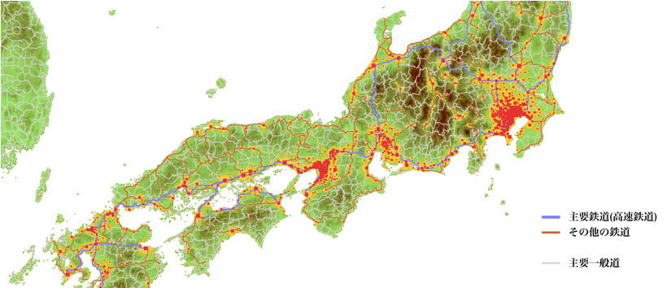

Tada Teruki's Portfolio


Email : tadateruki.public@gmail.com
Twitter : @PerukiFUN
Github : TadaTeruki / Perukii(old)
Email : tadateruki.public@gmail.com
Twitter : @PerukiFUN
Github : TadaTeruki / Perukii(old)
所属 Affiliation
京都府立清明高等学校 (昼間定時制・4年卒コース)
・公立はこだて未来大学 システム情報科学部 入学予定
・公立はこだて未来大学 システム情報科学部 入学予定
活動実績 Works
情報科学研究
ソフトウェア開発
主なプロジェクト
すべてのプロジェクト(制作日時順)
・ポートフォリオ(2022年版) 2021/12/24 ~ [Github]
|
・RDGL - Realistic procedural DEM generation library
|
 
|
|
・MiteWM
2020/7/29 ~ "TeapotWM"に継承 [Github]
C製のLinux系OS用ウインドウマネージャ(WM)。 X11ベース。 軽量・高速なWMを追求する他、ウインドウマネージャの制作手法そのものの再発掘を目指す。 |

|
|
・交通網シュミレータ
|
 |
すべてのプロジェクト(制作日時順)
・ポートフォリオ(2022年版) 2021/12/24 ~ [Github]
ポートフォリオ(本サイト)
・RDGL
上記参照
・TeapotWM 2021/5/20 ~ [Github]
Go製のウインドウマネージャ
・交通網シミュレータ
上記参照
・TransportMaker1 2021/2/1 ~ "交通網シミュレータ"に継承 [Github]
交通網シュミレータの初期実装。アルゴリズム面に多くの課題が存在した
・ポートフォリオ(2020/2021年版) 2020/11/28 ~ 終了 [Github][Deployment]
旧ポートフォリオ
・DBSCAN-test 2020/10/7 ~ 終了 [Github]
DBSCANの実装テスト
・Go練習用のワクワクドキドキテキストアドベンチャー 2020/9/30 ~ 終了 [Github]
Go練習用のワクワクドキドキテキストアドベンチャー
・MiteWM
上記参照
・三密WM 2020/7/25 ~ "MiteWM"に継承 [Github]
実装に成功した最初のウインドウマネージャ
・CairoPicker 2020/6/20 ~ 終了 [Github]
C++製の簡易描画プラットフォーム
このページについて About this page
このページの右に表示されている航空写真は、自動生成によるものであり、無限に続いています。
ぜひこの地図を眺めながら、地形生成の魅力を実感していただければと思います。
マウスや指によるドラッグにより、地図のフォーカスが移動します。
マウスホイール操作やピンチイン/アウトにより、地図の表示範囲の大きさが変化します。
このポートフォリオを気に入られた方は、ぜひともGitHubのStar⭐をお願いします。
ぜひこの地図を眺めながら、地形生成の魅力を実感していただければと思います。
マウスや指によるドラッグにより、地図のフォーカスが移動します。
マウスホイール操作やピンチイン/アウトにより、地図の表示範囲の大きさが変化します。
このポートフォリオを気に入られた方は、ぜひともGitHubのStar⭐をお願いします。